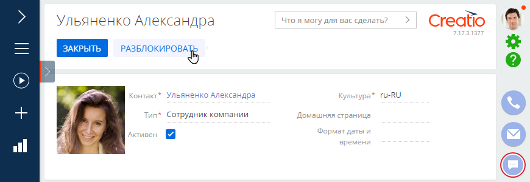
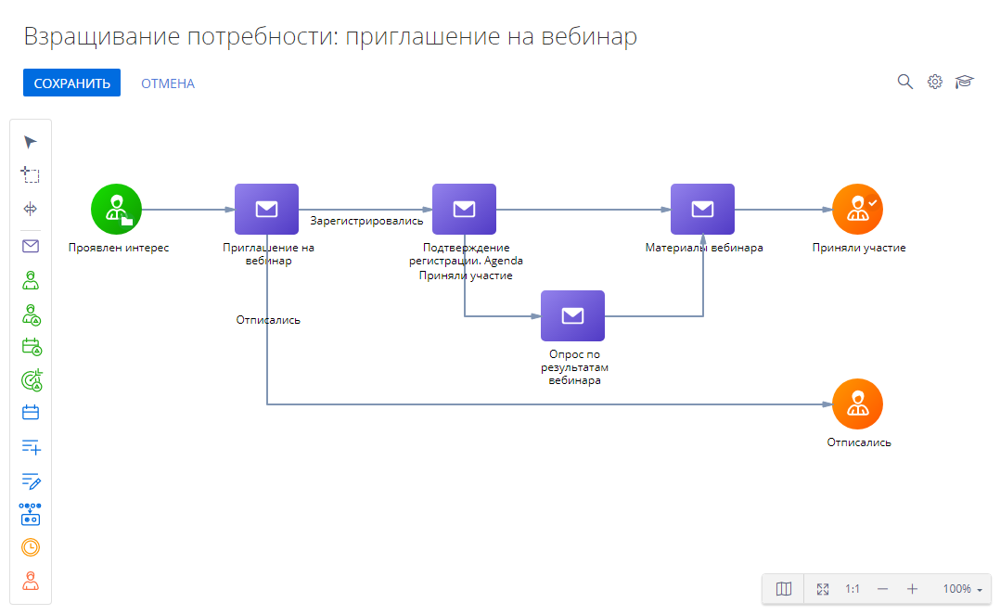

Дата релиза
Представляем обзор изменений и улучшений, реализованных в Creatio версии 7.17.3.
Инструкция по обновлению для приложений on-site доступна в отдельной статье.
Low-code платформа
Бизнес-процессы
Права на запуск процессов
- Реализован более удобный механизм настройки прав доступа на запуск отдельных бизнес-процессов. Изменить права доступа можно на странице его свойств. Это позволит администратору системы управлять правами доступа к процессам в зависимости от групп, к которым они принадлежат. Например, настроить возможность запуска процессов по обращениям для сотрудников поддержки и их руководителей. Права учитываются только для бизнес-процессов, которые запускаются вручную, и пользователей, не имеющих прав на системную операцию “Возможность запускать все бизнес-процессы”.
Пример настройки прав на запуск бизнес-процесса
Обработка файлов
- Добавлена возможность по заданным условиям формировать названия файлов, которые формируются бизнес-процессом при генерации отчетов. Для этого в элементе Обработать файл появился параметр Название файла. Он доступен, когда в настройке элемента в качестве источника файла указан отчет.
Новый параметр в настройке элемента Обработать файл
- Реализована возможность получать файлы из параметра процесса в элемент Обработать файл для их последующего добавления в систему.
Отправка писем
- Улучшен алгоритм выбора локализации при отправке мультиязычных сообщений в ходе процесса. Если в поле Кому указаны контакты с разными языками общения или у некоторых получателей язык общения не заполнен, для письма будет применен язык, настроенный по умолчанию.
Базовые возможности платформы
Чаты
- Появилась возможность использовать бот-платформы для первичной обработки сообщений из канала Facebook messenger. Благодаря этому можно снизить нагрузку на операторов. Если бот не сможет обработать вопрос клиента, то чат будет передан на оператора в Creatio с сохранением беседы клиента с ботом. Данная функциональность требует поддержки протокола передачи (Handover Protocol) на стороне бот-платформы.
- Для удобства оператора действия завершения чата и перехода к дублям контакта из чата отображаются кнопками на коммуникационной панели в открытом чате.
Кнопки завершения чата и перехода к дублям контакта
- Добавлена возможность быстро переключаться между чатами. В нижней области активного чата отображаются все чаты, которые находятся в работе у оператора, а также количество новых сообщений в них. Чаты располагаются в хронологическом порядке.
Быстрый переход между чатами
Визы
- У руководителей появилась возможность скрывать уведомления о назначенных на подчиненных визах, которые отображаются благодаря иерархии прав доступа. Это позволит быстрее обрабатывать запросы на визирование, не тратя время на сортировку уведомлений.
Просмотр уведомлений о новых визах
Импорт из Excel
- Появилась возможность сохранить в виде шаблона параметры импорта из Excel: объект, соответствие колонок и правила проверки дублей. В дальнейшем этот шаблон можно использовать для упрощения загрузки данных.
Сохранение шаблона загрузки данных
Администрирование
Creatio на .Net Core
- Для продуктов на платформе .NET Core реализовано логирование входящих http запросов. Настройка логирования осуществляется в конфигурационном файле appsettings.json в блоке "RequestLogging".
Управление пользователями
- Улучшен алгоритм автоматического продления сессии пользователя. В предыдущей версии алгоритма были возможны сценарии работы пользователей, при которых сессия не продлевалась автоматически.
- У системного администратора появилась быстрая возможность разблокировать пользователя, который был заблокирован системой после ввода серии неверных паролей. Для этого на страницу пользователя добавлена кнопка Разблокировать. Подробнее: Разблокировать учетную запись пользователя.
Разблокирование пользователя
Лицензирование
- Начиная с версии 7.17.4 перед обновлением приложения для Creatio on-site необходимо заказать лицензии и указать версию приложения, в которой они будут использоваться. Выданные лицензии действительны для указанной версии и ниже, что позволит упростить процедуру обновления.
Интеграции
Веб-сервисы
- Реализована автоматизация настройки SOAP-сервисов. В мастере настройки вы можете в несколько кликов загрузить нужный WSDL или XSD-файл и выбрать только те методы и их параметры, которые необходимо использовать. В результате в Creatio будет настроена интеграция с веб-сервисом с соответствующими характеристиками. Код, вызывающий веб-сервис, будет сгенерирован автоматически из загруженного файла.
Пример настройки SOAP-сервиса

Телефония
- Обновлены библиотеки интеграции для подключения к Cisco Finesse. Новые библиотеки поддерживают работу с Cisco Finesse 11.5 и выше. Если необходимо настроить интеграцию с более старыми версиями Cisco Finesse, обратитесь в службу поддержки Creatio.
Производительность
Центр уведомлений
- Ускорена обработка большого количества новых уведомлений на коммуникационной панели.
Инструменты разработки
Настройка конфигурации
- При настройке элементов конфигурации Creatio проверяет наличие префикса, установленного в системной настройке “Префикс названия объекта” (код “SchemaNamePrefix”). Если префикса нет, то вы увидите подсказку в поле.
- При настройке элементов конфигурации заголовок и название схемы генерируются автоматически с учетом префикса, установленного в системной настройке “Префикс названия объекта” (код “SchemaNamePrefix”).
Работа с пакетами
- Ошибки переноса данных между пакетами теперь отображаются в удобном для анализа формате таблицы.
- Стало удобнее задавать объекты для привязки данных благодаря опции множественного выбора. Вы можете одновременно выбрать:
- несколько объектов из списка;
- несколько объектов, соответствующих разным условиям фильтрации;
- все объекты, соответствующие условию фильтрации.
Пример выбора объектов для привязки данных
Работа с исходным кодом
- Появилась возможность работать с кодом в полноэкранном режиме. Также в этом режиме можно использовать горячие клавиши. Перечень доступных комбинаций описан в подсказке редактора исходного кода.
Работа с данными
- Удаление устаревших методов API по работе с данными, анонсированное ранее, переносится на версию 7.17.4.
CRM-решения
Инструменты маркетинга
Кампании
- Обновлен дизайн элементов кампании.
Новый дизайн элементов кампании
- Новый элемент Исключить дубли выполняет проверку аудитории кампании по указанным правилам и останавливает участие для дублей.
Пример настройки элемента Исключить дубли
- Новый элемент Произвольное распределение позволяет случайным образом направить участников по разным веткам кампании. Данный элемент удобно использовать для контрольных групп, сплит-тестов.
Инструменты продаж
Планирование
- В сохраненных версиях листов планирования появилась возможность просмотреть данные, на основании которых были получены значения расчетных колонок плана (drill down). Данная функциональность доступна только для тех версий листа планирования, которые будут созданы после обновления Creatio на версию 7.17.3.
Инструменты сервиса
Портал
- Появилась возможность автоматической раздачи пользователям портала прав доступа на связанные сервисные договоры и конфигурационные единицы. При этом пользователи портала будут получать доступ только к тем записям, объектами обслуживания которых они являются.
Для этого необходимо указать клиента в сервисных договорах и конфигурационных единицах (детали Объекты обслуживания и Пользователи соответственно), пользователю портала или организации, в которую он входит, выдаются права на чтение записи. Раздача прав регулируется системной настройкой “Включение прав на сервисные договоры и конфигурационные единицы для пользователей портала” (код “EnableRightsOnServiceObjects”).
Банки и финансы
Продуктовый каталог
- Для удобства работы характеристики клиента и продукта в условиях продукта размещены на отдельных вкладках. Настроить отображение параметров можно в справочнике Параметры, указав принадлежность характеристики клиенту или продукту.